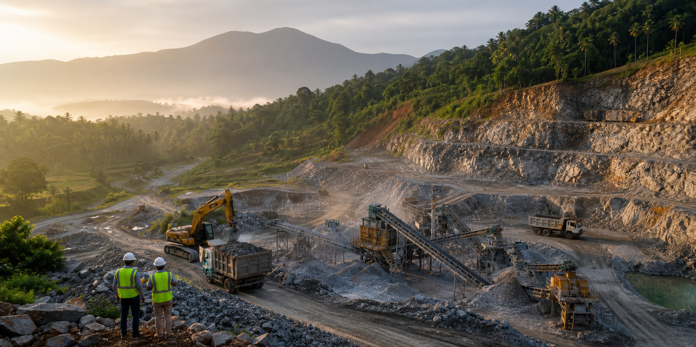

Quarry mining contracts across Kerala
Mining, crusher support, and licensed explosives supply.
Reliable field teams for stone quarries and stone crushers, built around production planning, safety discipline, and statewide service coverage.
Company overview
Practical quarry support from planning to production.
Kerlam Mining Services works with quarry owners, stone crusher units, and aggregate suppliers throughout Kerala. We support approved quarry operations with mining contracts, machinery coordination, crusher feed planning, and compliant explosives supply.
Mining Contracts
Contract mining support for quarry benches, loading plans, output targets, and daily site coordination.
Stone Crusher Support
Crusher feed management, stone movement, stockyard planning, and quarry-to-crusher workflow support.
Explosives Supply
Licensed explosives supply for eligible quarries and crushers with documentation and controlled handling.
Machinery Coordination
Coordination for excavators, loaders, tippers, compressors, and quarry equipment based on site needs.
Operations and safety
Safe systems for dependable production.
How we support sites
- Site visits to understand quarry layout, access roads, and crusher capacity.
- Production planning for stone movement, bench work, and crusher feed continuity.
- Coordination of field teams, equipment, and approved blasting requirements.
- Responsive support during monsoon conditions and changing site demands.
Compliance first
Explosives support is provided only for approved quarry operations through licensed supply channels and required documentation. Work is planned with controlled access, trained supervision, and strict safety procedures.
Serving Kerala
Supporting quarry and crusher operations across major production districts including Kasaragod, Kannur, Kozhikode, Malappuram, Thrissur, Ernakulam, Kottayam, Idukki, Kollam, and Thiruvananthapuram.
For enquiries
Request a site visit
Share your quarry location, crusher capacity, production requirement, and license status.